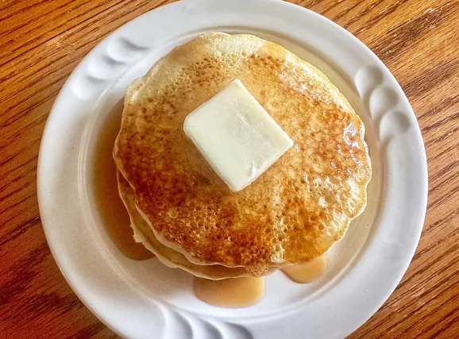

Buttermilk Pancakes

This is my mother's and grandmother's recipe from Western Tennessee. I have never found anything that comes close to the flavor of these pancakes. Add small berries for a different flavor boost. Serve with butter and maple syrup.
Ingredients
- 2 Cups all-purpose flour
- 2 tablespoons white sugar
- 1 teaspoon baking powder
- 1 teaspoon baking soda
- 1 teaspoon salt
- 2 cups buttermilk
- 2 large eggs
- 2 tablespoons unsalted butter, melted
- 1 tablespoon vegetable oil
Steps
- Preheat a griddle to medium heat, according to manufacturer's instructions.
- Mix flour, sugar, baking powder, baking soda, and salt together in a large mixing bowl. Add buttermilk, eggs, and butter; stir together until well blended but do not stir out all of the small lumps. Overmixing the batter will make the pancakes tough and rubbery.
- Pour oil on a paper towel and spread over the griddle to grease lightly. Test the griddle with a few drops of water; water should dance across the surface and not instantly steam and evaporate.
- Working in batches, drop 1/4 to 1/3 cupfuls batter for each pancake onto the hot griddle. Cook until the sides start to shine and look stiff, 3 to 5 minutes. Flip and cook until golden on the other side, about 2 more minutes. Repeat to make remaining pancakes.